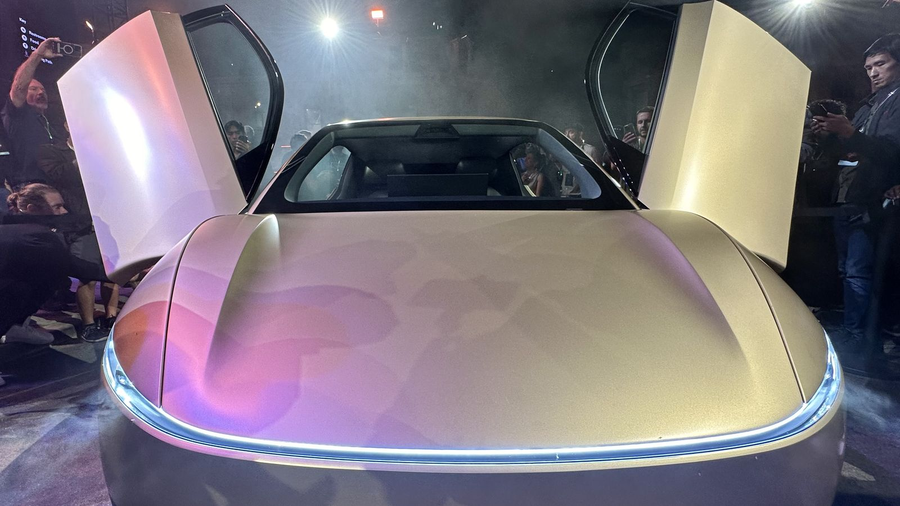

Your drive, now your downtime. Affordable rides, zero stress. RoboRide: autonomous Cybercab rides and delivery in Northwest Arkansas
A driverless Cybercab across Northwest Arkansas. Lounge the whole way.
Where to?
An illustration, not a booking tool: RoboRide isn't operating yet. Miles are straight-line between city centers; road trips are longer. Prices and trip times haven't been set. Full route map →
How a ride will work
- RequestBook a ride or a delivery from your phone.
More
Pick a pickup spot and destination, or a package drop-off. You will see the pickup time before you confirm.
- Meet your CybercabConfirm it is yours and step in.
More
The app shows which car is yours. Doors open for you; there is no driver to wait on.
- LoungeIt drives itself while you follow the trip live.
More
Read, rest, or take a call. In-app help from our local NWA team is a tap away on every trip.

Early access
Get a ride invite first.
Hear first when rides and delivery launch in your city.
No spam. See our Privacy Policy.
Services
One fleet for people and packages.
Rides
Everyday rides
Around town, from Dickson Street to Crystal Bridges.
Scheduled rides
Book ahead for XNA runs and game days.
Night Owl
A safe ride home after a night out.
Event shuttles
Group rides for concerts, festivals, and games.
For businesses
Corporate accounts
Employee rides with one central bill. Register interest →
Goods delivery
Shops, restaurants, and offices sending goods across NWA. For businesses →
Seven cities planned
Launching city by city. No cities are live yet.
- Bentonville
- Rogers
- Springdale
- Fayetteville
- Farmington
- Siloam Springs
- Eureka Springs
Why Northwest Arkansas
Sources
622,177 Fayetteville-Springdale-Rogers metro residents on July 1, 2025, up 2.4% in a year (Talk Business & Politics · FRED / U.S. Census Bureau). 1,263,634 XNA enplanements in 2025, up 10.4% (XNA traffic stats · Talk Business & Politics). About 34,000 students, preliminary fall 2026, with a record 7,100+ incoming class (University of Arkansas News · Fayetteville Flyer).
Safety
Built on real-world miles.
Projected total: about 3,112,000 unsupervised miles.
Estimate paused: it has run well past Tesla's last official figure and needs a new baseline.
How this number is calculated
Method: estimate, not a live Tesla feed. The base is Tesla's official figure from its Robotaxi safety page: 3,112,541 miles driven autonomously (no safety monitor in the car) as of the end of October 18, 2026, Central time. Since then we add miles at the pace Tesla's own live counter on that page uses, about 79,669 miles a day (roughly 0.92 miles a second), in whole miles. That pace is Tesla's estimate and may change as the fleet grows, so we refresh the base whenever Tesla updates its page or states a new total; if it isn't refreshed within 8 weeks the counter pauses. Before this figure we modeled fleet size × miles per car per day from public tracker counts; that model is now tuned to Tesla's official totals (1 million on Sept 3 to 3,112,541). The figure covers Tesla's own driverless fleet in Texas and Florida (Bay Area safety-monitor rides excluded). Tesla's Q3 2026 Update also said the service had reached nearly 2 million unsupervised miles by Sept 30. That figure is rounded and older than Oct 18, so it stays in the record and does not move this counter. RoboRide is not yet operating, and none of these are RoboRide miles.
Sources: official miles: Tesla Robotaxi Vehicle Safety Report (3,112,541 miles as of Oct 18, 2026) · 1M miles announced by Ashok Elluswamy at Tesla's Cybercab event, Austin, Sept 3, 2026 (TeslAnt, event video) · 380,000-mile total, Q2 2026 earnings call, July 22, 2026 (transcript) · 256-car fleet on Sept 3 (The Verge) · current fleet counts (Tesla News Wire Robotaxi Tracker, Teslarati, Robotaxi Tracker summary, Oct 19) · nearly 2 million cumulative unsupervised miles as of Sept 30, 2026, Tesla Q3 2026 Update (SEC exhibit 99.1; rounded, and older than the Oct 18 total above) · Austin Cybercab counts, which are not the full driverless fleet: 300+ in service per Tesla, 349 on the Texas registry (Tesla News Wire).
Tesla’s official Robotaxi safety report ↗ How AVs are regulated in Arkansas →
Built on Tesla FSD
Trained on billions of real-world miles.
Local oversight
An NWA team will monitor the fleet, with in-app help on every trip.
100% electric
Zero tailpipe emissions.
Private & secure
We will never sell your trip, location, or payment data.
News
Cybercab & Robotaxi updates.
Tesla industry news from independent reporting, as of October 22, 2026. Not RoboRide announcements; RoboRide is not affiliated with Tesla.
- Oct 21, 2026Robotaxi nears 2M unsupervised milesTesla's Q3 update says Robotaxi reached nearly 2 million unsupervised miles by Sept 30, about eight times the prior quarter, and the weekly gains stayed in the double digits. (Tesla Q3 2026 Update)
- Oct 21, 2026Dallas Cybercab rides next monthCybercab rides come to Dallas next month, with more cities planned before the end of 2026. Austin runs 6 a.m. to midnight, and Tesla expects round-the-clock service by year-end. (Earnings call · TeslaNorth)
- Oct 21, 2026Austin Cybercab fleet up about 10xThe Austin Cybercab fleet is about 10 times its size at launch a month ago. Tesla has said 300+ Cybercabs are serving Austin, and the Texas registry lists 349. (Earnings call · Tesla News Wire)
See all updates (10 more)
- Oct 21, 2026Customer Cybercabs targeted for end of 2026Tesla is trying to get Cybercabs to customers by the end of 2026. Most will stay Tesla-owned. Unsupervised driving for customer cars is expected around the second quarter of 2027. (Earnings call · TeslaNorth)
- Oct 21, 2026Tesla publishes a Robotaxi safety reportTesla launched an official Robotaxi Vehicle Safety Report: 3,112,541 miles driven with no safety monitor in the car, Jan 22 to Oct 18, across six Texas and Florida cities. Tesla reports zero people injured over that period. (Tesla Robotaxi safety page)
- Oct 17, 2026Austin hours extended to midnightAustin Robotaxi rides now run 6 a.m. to midnight. Tesla’s SI lead says FSD v15 is meant to unlock round-the-clock service. (Not a Tesla App)
- Oct 15, 2026Two more low-speed crashes reportedNHTSA’s latest crash-report data adds two more low-speed Robotaxi crashes from August, in Dallas and Austin, where a remote operator rather than the self-driving system was in control. Both were property damage only, at about 1 mph or less, with no passengers aboard. Tesla now has 36 Robotaxi incident reports on file. (Electrek)
- Oct 13, 2026School-zone speed petition under reviewNHTSA is reviewing a petition (DP26010, opened Oct 9) alleging Tesla robotaxis, both Model Y and Cybercab, exceeded active school-zone speed limits. It is not yet a formal investigation. (The Verge · Automotive News)
- Oct 13, 2026Rider camera views in developmentA Tesla UI engineer says on-demand rear and side camera views for Cybercab riders are “in development” (no date). Tesla’s Cybercab chief engineer also said new seats are coming. (Not a Tesla App · EVBytes)
- Oct 10, 2026300+ Cybercabs serving AustinTesla says 300+ Cybercabs are serving Austin, and its SI lead says Dallas is next (“Dallas soon,” no date given). On Oct 8, Texas’s vehicle registry showed Tesla’s Cybercab count jump from 169 to 319. (Teslarati · CultureMap Dallas · TeslaNorth)
- Oct 2026NHTSA reviews Cybercab certificationNHTSA is reviewing how Tesla certified the Cybercab to federal safety standards, including how it handles mirrors and rear visibility. Tesla got a 30-day extension to respond, and reports put the deadline for its sworn answers at Oct 30. (Teslarati · TeslaNorth · Not a Tesla App)
- Sept 3–4, 20261M miles and public Cybercab ridesAt its Austin Cybercab event Tesla announced 1 million unsupervised Robotaxi miles; public Cybercab rides in Austin opened the next day. (TeslAnt · All Things Elon)
- July 22, 2026380,000+ unsupervised miles in Q2On its Q2 call Tesla reported 380,000+ unsupervised Robotaxi miles across six cities in Texas and Florida. (Business Insider)
Help
Questions, answered.
Is RoboRide operating yet?
Not yet. RoboRide LLC is preparing to launch and no cities are live today. Join the waitlist to hear when service starts in your area.
Where will RoboRide operate?
Northwest Arkansas. The planned service area includes Bentonville, Rogers, Springdale, Fayetteville, Farmington, Siloam Springs, and Eureka Springs. We plan to launch city by city.
What services will you offer?
Two things: driverless rides for people, and local delivery of goods for businesses and customers, both using autonomous Tesla Cybercabs. There are no human drivers.
How much will it cost?
Pricing is TBD. Rates will be announced before launch, and waitlist members will hear first.
Is RoboRide part of Tesla?
No. RoboRide LLC is an independent Northwest Arkansas company that plans to operate Tesla Cybercab vehicles. We are not affiliated with or endorsed by Tesla, Inc.
I run a business. Can we work together?
We'd like to hear from you. Email partners@nwaroboride.org, or choose “Business partnership” on the waitlist form, and we'll follow up about delivery, employee rides, or venue pickup zones.
What happens to my email if I join the waitlist?
We use it only to contact you about RoboRide, and we will never sell it. See our Privacy Policy for details.
How do I reach rider support?
Email support@nwaroboride.org with questions now. Once rides are live, the same address will handle ride support.
Contact
Riders
Businesses
Press
Everything else